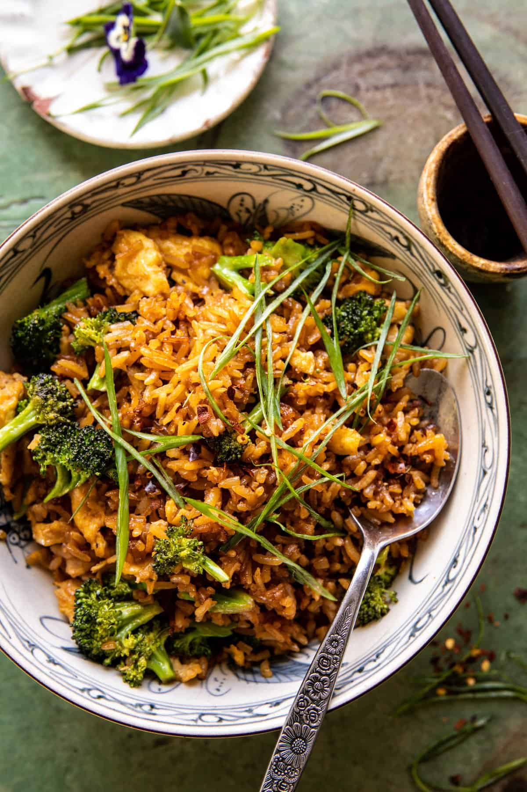

JonJon's Favorite Rice

Description
This alternative take on steamed rice does away with the traditional
method of steaming in water in favor of a combined variety of
flavorful liquids that incorporate layers of complexity with a bold
flavor that anyone could love. Soy souce, chicken stock, mirin, and
dashi come together to create an umami-rific dish not easily
forgotten. With the addition of the right seasonings, this dish
goes to another next level.
Ingredients
- Cold water (for rinsing)
- 1 cup Basmati rice
- 3/4 cup Chicken Stock
- 3/4 cup Dashi Stock
- 3 tbsp soy sauce
- 3 tbsp mirin
- 1 tbsp lemon juice conc.
- 1 tbsp water
- 2 tbsp broccoli buds
- 1 tsp salt
Steps
- Rinse the rice under cool running water until water drains clear, and drain well.
- Add all ingredients to a covered 2qt pot and bring to a boil.
- Reduce heat and simmer for 20 minutes. Keep covered for the duration.
- Remove heat and fluff.